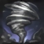

TAILWIND
Janna gains bonus Move Speed moving towards allied champions and nearby allied champions gain this bonus when moving toward her.
HOWLING GALE
By creating a localized change in pressure and temperature, Janna is able to create a small storm that grows in size with time.
She can activate the spell again to release the storm.
On release this storm will fly towards the direction it was cast in, dealing damage and knocking away any enemies in its path.
ZEPHYR
Janna summons an air elemental that passively increases her Move Speed and enables her to pass through units.
She may also activate this ability to deal damage and slow an enemy's Move Speed.
The passive is lost while this ability is on cooldown.
EYE OF THE STORM
Janna conjures a defensive gale that shields an ally champion or turret from incoming damage and increases their Attack Damage.
MONSOON
Janna surrounds herself in a magical storm, throwing enemies back.
After the storm has settled, soothing winds heal nearby allies while the ability is active.